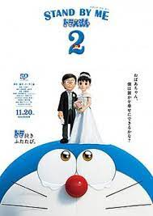

STAND BY ME 哆啦A夢 2

2020年冬天在日本上映，是哆啦A夢50周年紀念電影、哆啦A夢史上第 2部3DCG電影。作為《STAND BY ME 哆啦A夢》的續集，導演八木龍一與共同導演兼編劇山崎貴再度攜手，以原作《奶奶的回憶》為基礎，並將大雄與靜香結婚當天作為舞台，完整描繪出「大雄與靜香的結婚典禮」，從而展開一場連結「過去」、「現在」、「未來」的嶄新「哆啦A夢」故事。做好再度「哆啦哭泣」的準備了嗎？
哆啦A夢是從22世紀來的機器貓，在哆啦A夢與大雄一起生活的「現在」的日常生活中，有一天在房間裡看到了一個熊娃娃，讓他想到這是他幼稚園時去世的奶奶為他縫補的，充滿珍貴回憶的娃娃。想到最喜歡的奶奶，大雄的眼淚止不住，於是打算用時光機到未來去見奶奶！哆啦A夢雖然反對，但是後來拗不過大雄的請求，決定若是大雄不跟奶奶直接見面，就可以偷偷去看她。於是，大雄回到他 3 歲時的「過去」！
由於與前作相比構成較為簡單，因此故事被精細的描繪，伏筆埋下與回收的方式也都很巧妙。將大雄與奶奶的羈絆、靜香的愛情還有大雄的成長，維持出色的平衡並同時描述出來，這無非是理解了《哆啦A夢》這部作品的本質才能作到，以既大膽又巧妙的安排，成就出這部傑作。